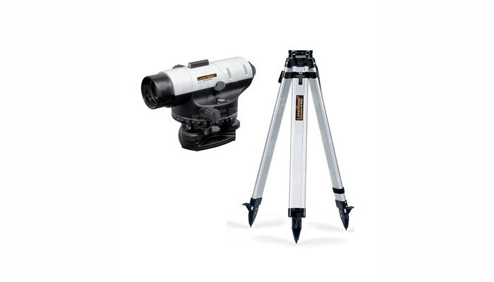

MĚŘÍCÍ A LASEROVÁ TECHNIKA
Veškeré ceny pujčovného viz. aktuální ceník.
-
ID = 9-1
Hilti PM 4-M
Multi liniový laser
Dosah: 10 m, 50 m s přijímačem
Přesnost: ±2 mm při 10 m
Váha: 990 gCena pujčovného 1 hodina 150 Kč 2 - 5 hodin 250 Kč 1 den/24h 350 Kč víkend 600 Kč kauce 3000 Kč -
ID = 9-2
Topcon RL-H3C
Nivelační rotační laser
Dosah: 300m
Přesnost: ±3.6mm / 50 m
samonivelační křížový laser s červenými paprsky 2 x 360 ° Váha: 1,9 kgCena pujčovného 1 hodina 250 Kč 2 - 5 hodin 350 Kč 1 den/24h 500 Kč víkend 900 Kč kauce 5000 Kč -
ID = 9-3
DeWALT DCE0811D1G
Křížový laser - zelený
Dosah: 30 m, 60 m s přijímačem
Přesnost: ±0,3 mm/m
Samonivelační křížový laser 2x360°Cena pujčovného 1 hodina 150 Kč 2 - 5 hodin 250 Kč 1 den/24h 350 Kč víkend 600 Kč kauce 3000 Kč -

ID = 9-4
Laserliner AL 26
nivelační přístroj
Zvětšení: 26x
Odchylka: 2,5mm/km
Stupnice: horizontální 360°Cena pujčovného 1 hodina 150 Kč 2 - 5 hodin 200 Kč 1 den/24h 300 Kč víkend 500 Kč kauce 5000 Kč -
ID = 9-5
Bosch PLR 30
Laserový měřič vzdáleností
Přesné měření až 30 m.
Snadné určování délek, ploch a objemů.Cena pujčovného 1 hodina 0 Kč 2 - 5 hodin 50 Kč 1 den/24h 100 Kč víkend 150 Kč kauce 1000 Kč -
ID = 9-6
Berner Termodetektor
k vyhledávání tepelných mostů
Měření: teploty, vlhkosti, tepelný most
Spolehlivě zobrazuje tepelné mosty a určuje oblasti s rizikem výskytu plísně.Cena pujčovného 1 hodina 0 Kč 2 - 5 hodin 0 Kč 1 den/24h 50 Kč víkend 0 Kč kauce 1000 Kč -
ID = 9-7
Nivelační lať TN 15-0
hliníková teleskopická lať
Délka: 5 metrů
Přední strana E dělení. Zadní strana mm dělení počítané odspoda latě.Cena pujčovného 1 hodina 0 Kč 2 - 5 hodin 0 Kč 1 den/24h 0 Kč víkend 0 Kč kauce 0 Kč